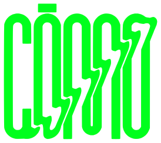

Cargando referencias…
Cómo se hace este índice
Nadie se ha escuchado los episodios con una libreta. Lo ha hecho una máquina, en cuatro pasos:
… episodios con subtítulos
Se descargan los subtítulos de cada episodio del canal de YouTube, con sus tiempos. Los episodios que no tienen subtítulos activados se quedan fuera: sin texto, no hay nada que leer.
… menciones
Una IA lee cada transcripción a trozos de 20 minutos y apunta quién o qué sale, en qué minuto, en qué contexto y si es tema central o de pasada. También lee la descripción del vídeo, donde suelen citar artículos y estudios.
… identificadas
Cada nombre se busca en Wikidata, TMDB, Open Library y MusicBrainz para saber qué es exactamente y sacar foto o portada. Si la coincidencia es dudosa, queda «por revisar». Lo que se cuela mal se va corrigiendo a mano.
… referencias
Se juntan las menciones de una misma cosa y todo acaba en un archivo que lee esta web. Cada minuto enlaza al momento exacto del vídeo.
Ese archivo lo puedes descargar en JSON o en CSV.